Jangan Bayar RM300 Sebulan Untuk Tuisyen — Anak Kuasai Matematik KSSM Dengan Sekali Bayar Sahaja
Math Mastery susun KESELURUHAN sukatan Matematik KSSM Tingkatan 1 hingga 3 dalam satu laluan pembelajaran yang jelas — nota, diagnostik, latihan berperingkat dan penilaian mastery. Terus dalam telefon anak, 24 jam, tanpa perlu tunggu kelas tuisyen.
✅ Sekali bayar sahaja ✅ 100% mengikut DSKP KSSM ✅ Tiada iklan atau gangguan
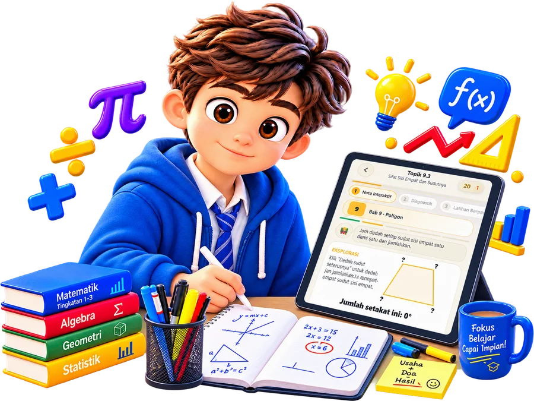
Setiap tahun, ramai ibu bapa runsing perkara yang sama.
Nak hantar anak tuisyen — kos makin lama makin naik, sampai RM3,600 setahun untuk SATU subjek.
Tak hantar tuisyen — risau anak tercicir dan hilang keyakinan sebelum peperiksaan.
Nak cari rujukan online pun — aplikasi atau laman web yang sedia ada kebanyakannya tumpukan SPM sahaja, jarang ada yang khusus disusun untuk Tingkatan 1-3.
Padahal, mulai tahun depan pelajar Tingkatan 3 sudah perlu bersedia untuk matrik pembelajaran baharu — asas yang kukuh sepatutnya dibina lebih awal, bukan ditangguh.
Bagusnya, masalah ni ada jalan penyelesaian yang jauh lebih murah — dan anda akan nampak sekarang.
Cabaran Sebenar Ibu Bapa Hari Ini
Ramai ibu bapa mahu membantu anak cemerlang dalam Matematik, tetapi menghadapi kekangan yang sama setiap tahun — dan kekangan ni yang selalu buat rancangan terbantut.
Kos tuisyen yang membebankan
Tuisyen persendirian untuk satu subjek boleh mencecah RM100–300 sebulan. Sepanjang tiga tahun (Tingkatan 1–3), jumlah ini menjadi belanja yang besar untuk satu subjek sahaja.
Bantuan tidak tersedia bila diperlukan
Anak sering terkandas semasa mengulang kaji pada waktu malam atau hujung minggu — waktu di mana pusat tuisyen sudah tutup dan ibu bapa sendiri tidak pasti cara mengajar topik tersebut.
Buku rujukan tidak tersusun mengikut kemajuan
Buku rujukan pasaran memberikan nota dan latihan, tetapi tidak memandu anak langkah demi langkah — dari memahami konsep, mengesan kelemahan, sehingga benar-benar menguasai topik tersebut.
Kemajuan sukar dipantau
Ibu bapa selalunya hanya mengetahui kelemahan anak selepas keputusan peperiksaan keluar — sudah terlambat untuk bertindak bagi topik tersebut.
Bagaimana Math Mastery Menyelesaikannya
Satu bayaran, jauh lebih rendah daripada kos tuisyen
Akses penuh tiga Tingkatan dengan sekali bayaran — bukan yuran bulanan yang berterusan.
Sedia 24 jam, terus di dalam telefon anak
Tiada had waktu operasi — anak boleh mengulang kaji bila-bila sahaja topik itu diperlukan, termasuk pada waktu malam.
Laluan pembelajaran berstruktur, bukan sekadar bacaan
Setiap topik melalui lima fasa — dari nota interaktif sehingga penilaian mastery — memastikan konsep benar-benar difahami, bukan dihafal.
Laporan kemajuan yang telus untuk ibu bapa
Pantau sendiri bab mana yang sudah dikuasai dan bab mana yang masih memerlukan perhatian — sebelum peperiksaan, bukan selepasnya.
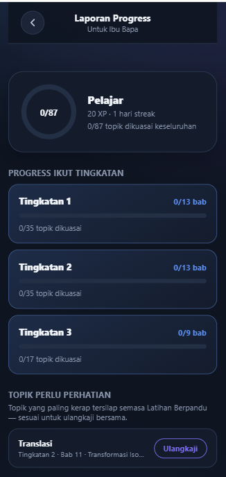
Satu Laluan Pembelajaran yang Lengkap
Setiap topik dalam Math Mastery mengikut lima fasa yang sama — direka supaya kefahaman terbina sedikit demi sedikit, bukan terus dilempar soalan susah.
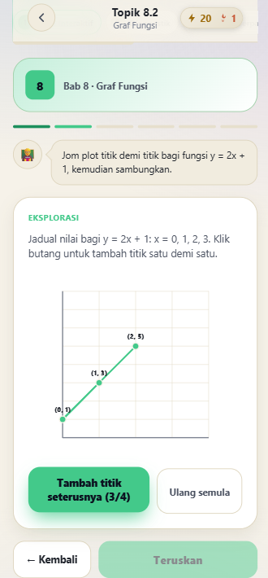
Nota Interaktif — Faham Dulu, Baru Ingat
Setiap topik bermula dengan penerokaan visual: anak klik, tarik dan cuba sendiri sehingga konsep tu benar-benar "masuk akal". Pendekatan ini jauh lebih berkesan berbanding membaca nota secara pasif, kerana anak sendiri yang membina kefahamannya.

Diagnostik — Kenal Pasti Tahap Sebenar
Sebelum masuk latihan penuh, aplikasi menguji dahulu sejauh mana anak sudah menguasai asas topik tersebut. Keputusan ini menentukan laluan seterusnya — sokongan tambahan diberi kepada bahagian yang masih longgar.
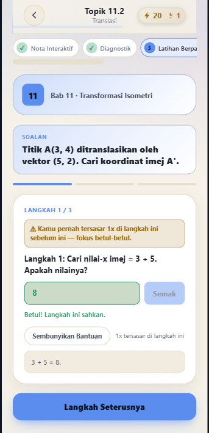
Latihan Berpandu — Bimbingan Setiap Langkah
Soalan dipecahkan kepada langkah-langkah kecil, lengkap dengan bantuan yang boleh diminta bila anak tersekat. Istimewanya, sistem mengingati langkah mana anak pernah tersilap sebelum ini dan memberi amaran khas supaya fokus semula di situ.
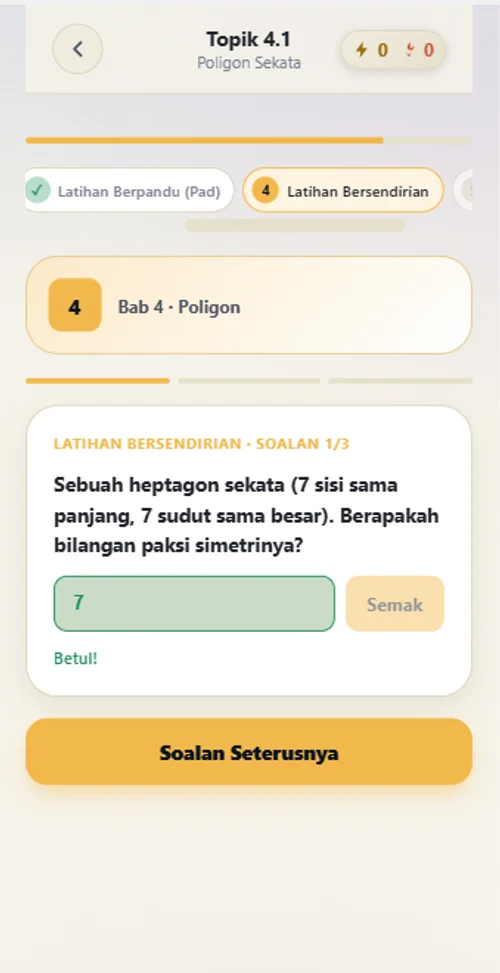
Latihan Bersendirian — Uji Kefahaman Sebenar
Apabila sudah cukup yakin dengan bimbingan, anak mencuba soalan serupa tanpa bantuan langsung. Fasa ini memastikan kefahaman tersebut benar-benar melekat, bukan sekadar boleh diikuti apabila dituntun.

Ujian Mastery — Pengesahan Rasmi
Ujian akhir topik memerlukan markah sekurang-kurangnya 85% untuk lulus. Jika belum mencukupi, aplikasi menghantar anak kembali ke Latihan Berpandu — tiada jalan pintas, memang perlu faham dengan jelas sebelum sesuatu topik diiktiraf "dikuasai".
Bukan Itu Sahaja Anda Dapat
Mod Ujian UASA/UPSA
Latihan mengikut format peperiksaan sebenar bagi persediaan UASA dan UPSA.
Sistem Motivasi Berterusan
Reka bentuk yang menggalakkan latihan konsisten setiap hari, bukan sekali sekala menjelang peperiksaan.
Laporan Progress
Ibu bapa boleh menyemak sendiri kemajuan anak bagi setiap bab, bila-bila masa.
Berfungsi Tanpa Internet
Pasang terus ke skrin utama telefon (PWA); sekali dimuatkan, kandungan kekal boleh diakses walaupun tiada data atau WiFi.
Disahkan Mengikut DSKP
Setiap kandungan disemak dan disahkan selari dengan dokumen DSKP KSSM Matematik terkini.
Liputan Penuh Tingkatan 1–3
13 + 13 + 9 bab dalam satu platform yang sama — anak tak perlu tukar aplikasi setiap kali naik Tingkatan.
Privasi Terjamin
Tiada pendaftaran akaun diperlukan. Kemajuan anak disimpan terus dalam telefon, bukan pada server luar yang boleh dikongsi kepada pihak ketiga.
Kemaskini Percuma
Sebarang pembetulan atau penambahbaikan pada kandungan Tingkatan 1-3 sedia ada sentiasa percuma — tiada bayaran tersembunyi untuk apa yang anda telah beli.
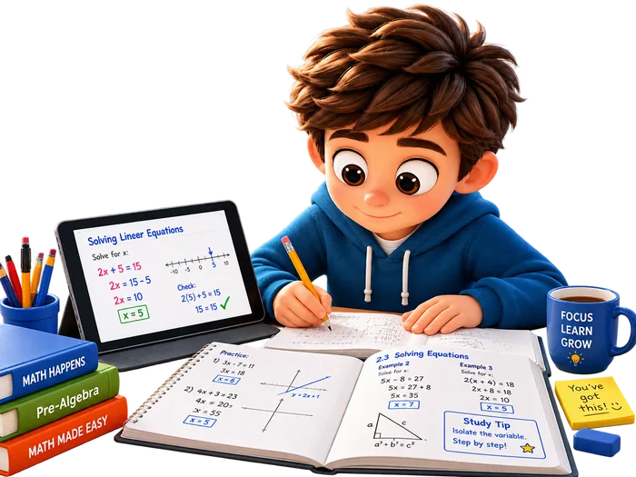
Sesuai Untuk Keluarga Yang Bagaimana?
Pelajar Tingkatan 1, 2 atau 3 yang perlu kukuhkan asas sebelum meneruskan ke topik baharu.
Anak yang lebih selesa belajar ikut rentak sendiri, berbanding kelas tuisyen berkumpulan yang serentak untuk semua.
Ibu bapa yang ingin memantau kemajuan anak secara berkala, tanpa perlu mendampingi setiap sesi belajar.
Keluarga yang mencari alternatif lebih jimat berbanding tuisyen bulanan, tanpa mengurangkan mutu bimbingan.
Lihat Sendiri Isi Dalamnya
Macam buku rujukan yang boleh diselak-selak dahulu — ini beberapa lagi skrin sebenar aplikasi, merentasi pelbagai bab dan Tingkatan.
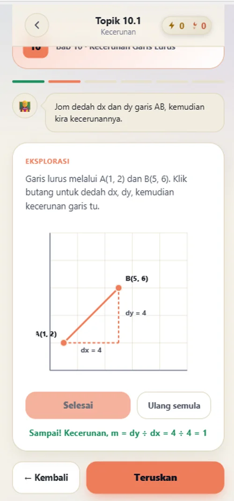

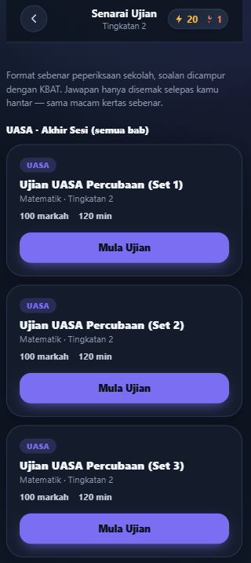
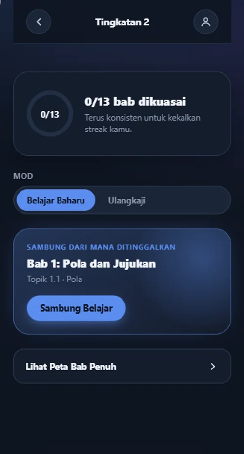
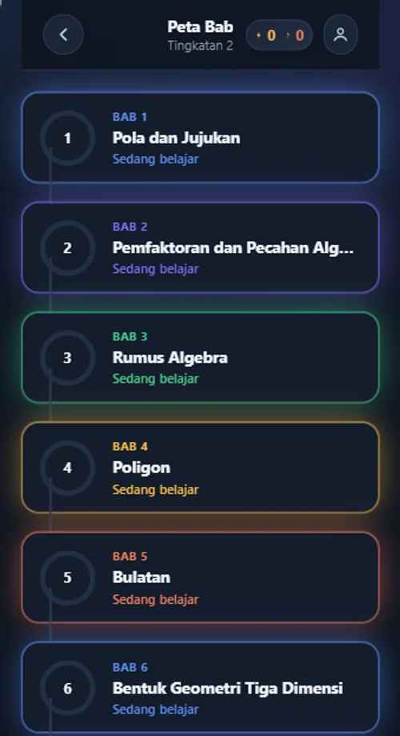
Saya perasan satu perkara pelik — bila cari rujukan online, aplikasi atau laman web untuk bantu anak belajar Matematik, hampir semua tumpukan untuk SPM. Aplikasi yang tersusun khusus untuk Tingkatan 1, 2 dan 3 memang susah nak jumpa, sedangkan asas yang kukuh pada tahun-tahun inilah yang paling penting — lebih-lebih lagi apabila mulai tahun depan, pelajar Tingkatan 3 sudah perlu bersedia untuk matrik pembelajaran yang baharu.
Math Mastery dibina untuk isi jurang tu — satu aplikasi yang benar-benar disusun ikut DSKP KSSM Tingkatan 1-3, terus dalam telefon. Sekali install, tak perlu bawa buku tebal ke mana-mana — bila-bila anak nak ulang kaji, tinggal klik dan terus belajar. Produk ini masih baharu dan saya masih dalam fasa awal membina rekod pengguna — tapi setiap bab dan setiap soalan disemak dengan teliti sebelum dikeluarkan. Kalau anak anda perlukan asas yang kukuh sebelum melangkah ke Tingkatan seterusnya, saya harap Math Mastery boleh bantu.
3 Bonus Percuma Bila Beli Hari Ini
Bukan sekadar akses aplikasi — turut disertakan tiga rujukan tambahan untuk bantu anak lebih bersedia menghadapi peperiksaan.
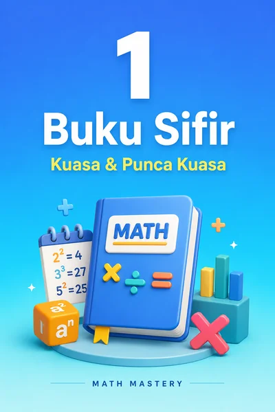
Buku Sifir Kuasa & Punca Kuasa
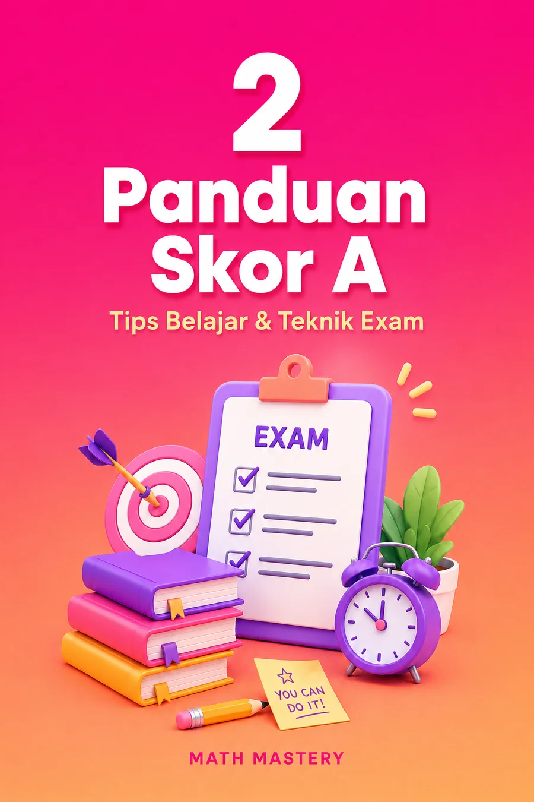
Panduan Skor A — Tips & Teknik Exam
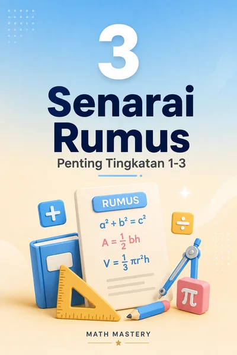
Senarai Rumus Penting T1–T3
Pautan muat turun ketiga-tiga bonus ini disertakan terus dalam emel selepas pembayaran berjaya.
Pelaburan Sekali, Manfaat Tiga Tahun
Kurang daripada kos SATU sesi tuisyen bulanan — dengan akses yang berkekalan sehingga anak bersedia ke Tingkatan 4.
Akses penuh Tingkatan 1, 2 & 3 — satu bayaran, tiada yuran bulanan berulang.
- Keseluruhan nota, latihan & ujian mastery — 13+13+9 bab
- Mod ujian UASA/UPSA
- Laporan kemajuan untuk ibu bapa
- Boleh digunakan pada lebih daripada satu peranti
- + 3 Bonus percuma (nota sifir, panduan skor A, senarai rumus)
Harga pelancaran RM39 ini akan naik semula ke RM49 tanpa notis awal.
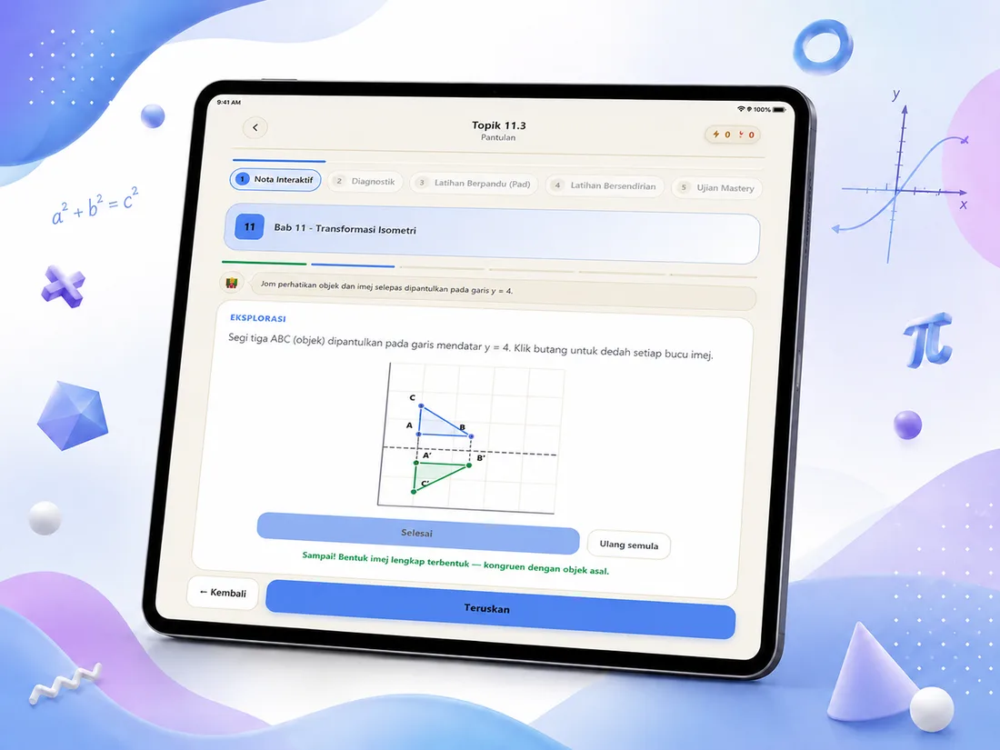
- ✓ 100% disahkan ikut DSKP KSSM terkini
- ✓ Liputan penuh Tingkatan 1, 2 & 3 — tak perlu beli lagi tahun depan
- ✓ Boleh dipasang & digunakan tanpa internet (PWA)
- ✓ Kemaskini kandungan percuma selama-lamanya
- ✓ Tiada risiko — bayar sekali, guna sepanjang 3 tahun
Bayar dengan selamat secara online (FPX/DuitNow)
Terima kod akses peribadi melalui emel
Masukkan kod dalam aplikasi dan mula belajar
Soalan Lazim
Perlukah sambungan internet untuk menggunakan aplikasi ini?
Selepas dimuatkan buat kali pertama, aplikasi boleh dipasang terus ke skrin utama telefon (PWA) dan digunakan walaupun tanpa internet.
Bolehkah digunakan pada lebih daripada satu peranti?
Ya. Kod akses yang sama boleh dimasukkan pada beberapa peranti — contohnya telefon dan tablet anak.
Sesuai untuk anak Tingkatan berapa?
Tingkatan 1, 2 dan 3 disediakan dalam SATU bundle yang sama — anak terus menggunakan aplikasi yang sama sepanjang tiga tahun, tanpa perlu membeli semula setiap tahun.
Bagaimana cara pembayaran?
Bayaran dibuat secara online dan selamat melalui Online Banking (FPX) atau DuitNow QR. Kod akses akan dihantar ke emel yang didaftarkan sejurus selepas pembayaran berjaya.
Masih teragak-agak? RM39 sekali bayar — kurang daripada kos SATU sesi tuisyen — untuk akses 3 tahun penuh. Harga ni takkan lama, jangan tunggu sampai terlepas.
Beli Akses Penuh — RM39🔒 Bayaran selamat melalui FPX/DuitNow · Kod akses terus ke emel anda